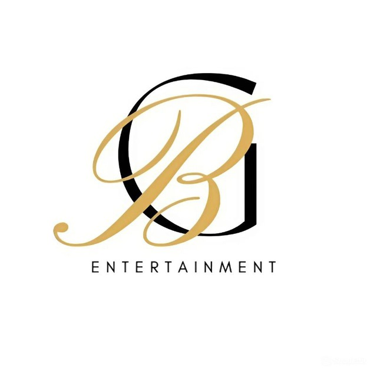

GB
ENTERTAINMENT Website

One of my two freelance projects. This website consists of at least five fully developed pages and several interactive forms. It was built using WordPress with custom HTML and CSS coding to enhance layout, functionality, and design flexibility.
Link for itAgency Utopia Website

My second freelance project. This website was a single-page project
featuring a custom form and numerous interactive animations. It was
developed using WordPress with extensive use of custom HTML and CSS
for design and motion effects.
(The live link is no longer available.)
Wiki-Fandom
Page
Developed a fandom-style wiki website for GB ENTERTAINMENT, designed to present detailed information about the company and its artists. The project includes a visually engaging main page, along with some of individual artists' pages. The layout focuses on readability and easy navigation, reflecting the style of wiki platforms.
Link for it